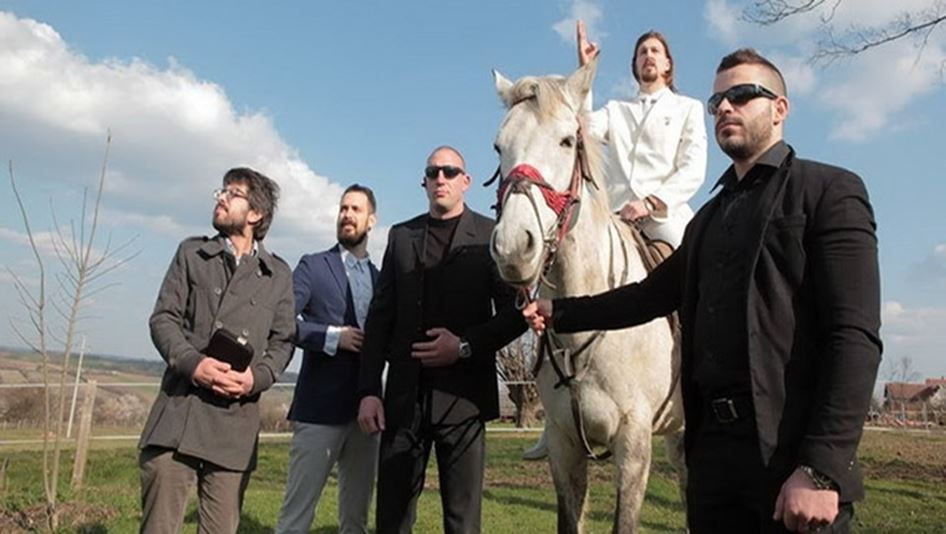

QU’EST-CE QUE L’IRRUPTION DES PITRES DANS LA VIE PUBLIQUE NOUS APPREND SUR NOUS-MÊMES?
Nous Européens n’aurons bientôt plus les moyens de regarder la réalité en face. Tout s’évertue à nous en ôter l’envie. Les politiques et les médias veillent comme dans Molière à mettre des noms convenables sur les laideurs qui choquent — voire à escamoter celles-ci lorsqu’elles deviennent proprement innommables.
Sans qu’on s’en soit aperçu, des taxations infamantes — « fachosphère », « extrême droite » — sont désormais appliquées à des gens qu’on ne peut associer ni de près ni de loin à ces idées radicales. De gauche, de droite ou de nulle part surgissent de nouveaux « pestiférés » dont ni les propos, ni le langage, ni les opinions, ni la manière d’être ne peuvent être qualifiés d’extrêmes — pour peu que les mots aient encore un sens. Leur seul tort, le plus souvent, est de ne pas prendre pour argent comptant les aberrations et les simplifications de la rumeur dominante. Exercer son discernement, vouloir attirer l’attention sur le fond des problèmes est devenu en soi, et a priori, un motif de disqualification.
LE RÈGNE DE LA PEUR
Dans ce fossé grandissant entre la réalité vécue et ses représentations obligées tâtonne et s’égare la population ordinaire, celle qui travaille et qui vote. Elle tâtonne, parce qu’elle a perdu certains repères essentiels d’une vie en société. La confiance dans les médias est au plus bas, les écoles produisent des ignares et de futurs chômeurs, les politiques s’illustrent par leur conformisme et leur indécision et les certitudes qu’on croyait immuables concernant la famille, la communauté nationale, l’éducation ou l’identité sexuelle sont dénigrées avec une hargne effarante. Les règles de vie ne procèdent plus d’expériences transmises, mais de définitions imposées. Le dressage a remplacé l’éducation.
Cela dit, tout va bien. Nous le disons et nous le répéterons jusqu’à ce que le mal frappe à notre porte et s’invite dans notre cuisine. Nous le répétons encore lorsqu’il a profané notre chambre à coucher. Nous ne le pensons pas, bien entendu, mais n’osons même plus nous avouer ce que nous pensons. Et encore moins le dire. Où le dire ? Dans des meetings ? Mais les directions des partis écoutent-elles la base ? Dans les réseaux sociaux, cette procrastinante agglomération de solitudes ? Même plus : ce dernier exutoire est lui-même en train de se corseter et de se censurer. Les délits verbaux et les propos «discriminants» sont plus sévèrement punis, au travail et dans la vie publique, que des actes criminels et la mémoire infinie de l’internet garde trace de toutes nos frasques à l’attention des éventuels employeurs à venir. Nous ne nous en sommes pas aperçus, mais nous sommes ligotés. Et les anomalies de 2016 — contre-information russe, Brexit, Trump — ont eu pour premier effet concret un sensible resserrement de la camisole.
LE TEMPS DES PITRES
L’union de la peur et de l’absurde engendre l’apathie. D’où l’émergence de la « PRAF-attitude » dont parle Brice Teinturier («Plus rien à faire, plus rien à foutre». La vraie crise de la démocratie, (voir le Cannibale lecteur d’Antipresse 68). De fait, le premier parti dans les démocraties modernes est celui de l’abstention.
L’apathie a une sœur jumelle: la dérision. D’où l’irruption sur la scène politique de figures qui annoncent la négation de la politique elle-même. Voici, en France, le Macron®, la logomachine publicitaire projetée sur les planches. Voici en Italie Beppe Grillo, qui brouilla suffisamment les cartes pour soulever une lame de fond — avant de se rallier spectaculairement au système.
Et voici maintenant que la Serbie s’apprête à élire son président. Alors que le premier ministre actuel, Vučić, s’est illustré par son activisme et son méthodique accaparement du pouvoir, il se retrouve contesté par un Borat de province qui aurait poussé la farce jusqu’à véritablement se porter candidat. Ce sympathique provocateur s’est inventé un nom de famille ridicule (Preletačević = « Survoleur »), se fait appeler « Le Blanc » parce qu’il s’habille toujours de blanc et réduit sa communication à un slogan sans aucun contenu: Samo jako!, autrement dit : « Allons-y fort ! »
Il revendique une attitude «cool», dénonce la «nervosité» du pouvoir et prétend rassembler tous les mécontents sans idée ni cause. Il se définit comme la voix de cette « société civile » qui ne veut plus se reconnaître dans aucun parti car les partis, désormais, incarnent la magouille et la corruption. En quelques semaines, ce pur mouvement (« en marche ! » pourrait aussi être sa devise!) sans aucun programme est devenu le principal concurrent de l’homme fort du pays.
Est-ce un rebelle ou un pantin, un Coluche inconnu ou un produit de marketing ? Les deux sont possibles, encore qu’on l’a vu avec les têtes d’Otpor, le noyau de la «révolution colorée» serbe qui fit tomber Milošević. Peut-être se moque-t-il même d’eux, de ces théoriciens de la «reprise non-violente du pouvoir». Peut-être — mais il est en train de pousser leur propre stratégie de la « société civile en marche » dans des raffinements inattendus.
Le ras-le-bol, la privation de parole et la déception nous font en effet oublier une vérité fondamentale: c’est qu’il y a un régime pire que celui des institutions incapables et corrompues. C’est le régime qui suit l’effondrement des institutions, autrement dit le règne du chaos. La montée des pitres nous venge et nous soulage, mais elle sape en même temps les fondements mêmes de l’ordre où nous vivons. En Serbie, en Ukraine, des guerres civiles ont commencé dans la liesse festive et la satire. Elles n’ont débouché sur aucun progrès notable, sinon celui du pouvoir des mafias et du grand capital globalisé. Les pitres sont le papier à mouches qui attire et qui fixe des énergies susceptibles de mettre en péril de système — si elles s’unissaient autour d’un projet plutôt que d’un rejet.
Mais comment élaborer aujourd’hui un projet ? Les projets impliquent la confiance et l’audace. Or nous sommes atomisés, éparpillés, méfiants. Or la peur grégaire est devenue la tonalité de fond de l’existence dans les pays qui ont jadis inventé la démocratie et les droits de l’individu. L’absurde est devenu le moyen d’expression de cette peur. La liberté d’expression n’est plus qu’un luxe incongru et la démocratie, un rite. L’Europe se meurt par les deux bouts: à la fois par l’ineptie des institutions et par l’effondrement des personnalités individuelles. Les deux sont du reste liés par la vieille loi alchimique: ce qui est en haut est comme ce qui est en bas. Aucun projet politique, quel qu’il soit, n’a la moindre chance de réussir s’il ne s’accompagne d’une reconstruction des personnalités. En commençant par redéfinir le sens de l’existence et de la vie en communauté — deux questions auxquelles l’islam fournit des réponses sommaires mais efficaces.
Face à cette concurrence établie sur nos terres, les «outils» de la politique et du droit apparaissent dérisoires. Nous nous évertuons à imposer des lois-cadres à notre existence sans oser dire ce qu’elle est à nos yeux. Nous sommes devenus frêles et timorés, reléguant l’essentiel dans les allusions. Lorsque ce rapport sera inversé, que l’essentiel sera explicite et que le fond se remettra à dicter la forme, nous aurons retrouvé notre âme. Tout le reste est pitrerie.

Partager cette page